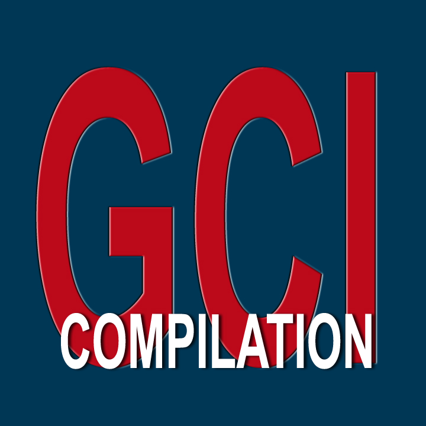
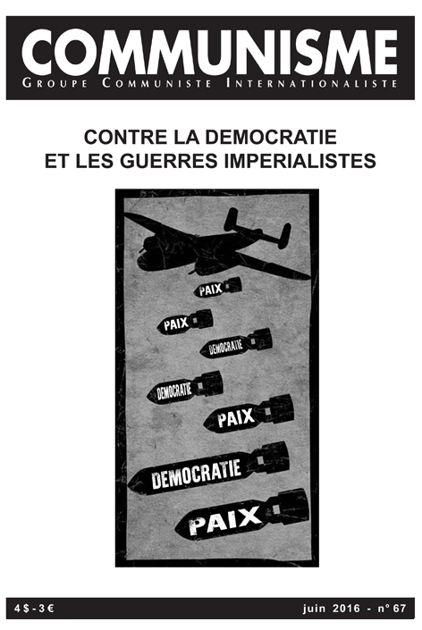
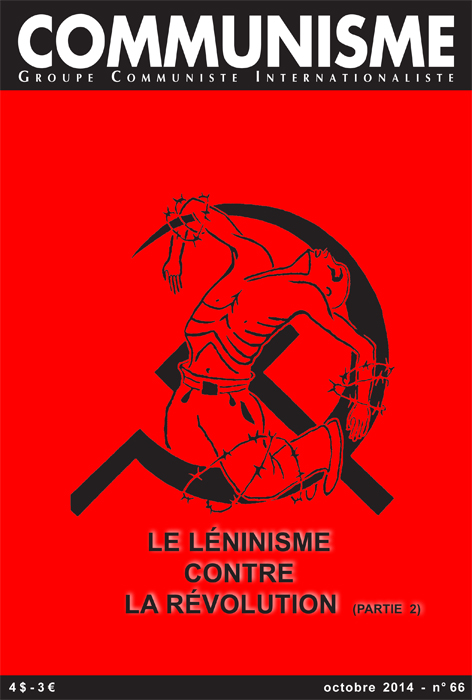
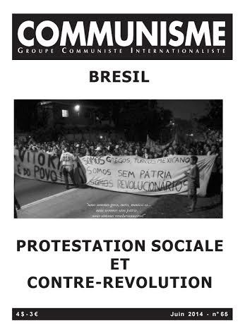
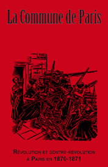
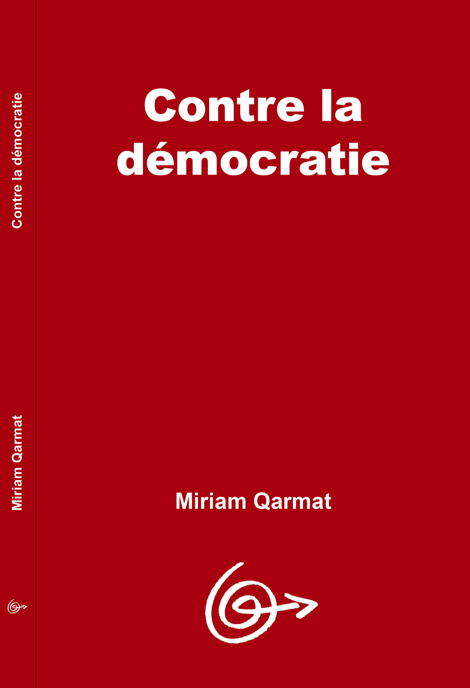
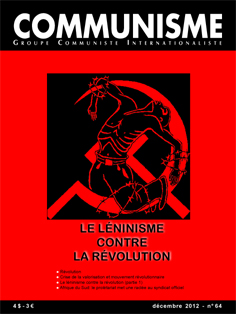
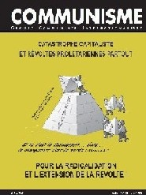
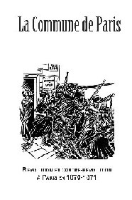

Anglais
Français
Espagnol
Arabe
Tchèque
Allemand
Grec
Hongrois
Kurde
Portugais
Russe
Turc
Chinois
Italien
Serbo-croate
Suédois
Lisez aussi:

Contact:
info [at] gci-icg [dot] org
|
Quoi de neuf?
Octobre 2018
Juin 2016
Communisme n°67 (Juin 2016) - Organe central
en français du GCI | PDF |
Contre la démocratie et les guerres impérialistes.
Octobre 2014
Communisme n°66 (Octobre 2014) - Organe central
en français du GCI | PDF |
-
Le léninisme contre la révolution (2ème partie).
Juin 2014
Communisme n°65 - Organe central
en français du GCI | PDF |
-
BRESIL, PROTESTATION SOCIALE ET CONTRE-REVOLUTION.
-
Annexe 1: Emeutes et affrontements à Leblón, un des quartiers les plus bourgeois de Rio.
-
Annexe 2: Généraliser les combats! Mort à la paix sociale!
-
Annexe 3: Armes, commerce et répression.
-
Annexe 4: Guerre impérialiste et luttes prolétariennes.
Lisez
Organe central en français du Groupe
Communiste Internationaliste (GCI)
Qui sommes-nous?
Avant d'être le fruit des efforts
subjectifs accomplis par une poignée de militants pour la mettre
sur pied, une organisation communiste résulte d'abord des déterminations
historiques poussant irrésistiblement le prolétariat à
se constituer en classe, à s'organiser en force, en parti distinct
de tous les partis de la société bourgeoise. L'effort organisatif
des minorités prolétariennes, concrétisé dans
l'espace et dans le temps par la création d'un groupement communiste,
est essentiellement déterminé par le communisme comme
mouvement et par son parti historique, c'est-à-dire par
la mémoire accumulée de toute l'expérience des luttes
précédentes, condensée sous forme d'un programme.
La création de notre groupe n'a pas échappé à
ces déterminations historiques.
Le Groupe Communiste Internationaliste
(GCI) existe depuis 1978.
Nous publions des revues centrales en
français, allemand, anglais, arabe, espagnol, hongrois, kurde et
portugais. Nous disposons également de textes en grec, en perse,
en russe, en serbo-croate et en turc.
Notre petit groupe n'a aucune réalité
nationale. Il n'est lié à aucun pays et ne se réfère
à l'histoire d'aucune nation.
Au départ, il y a la centralisation
d'une poignée de militants de divers continents, parlant différentes
langues et qui, à partir d'expériences de luttes très
diverses et de réflexions sur les défaites de ces luttes,
ont voulu mettre leurs convergences politiques en commun. En nous réappropriant
les expériences passées, en critiquant collectivement la
démocratie, le légalisme, le parlementarisme, le pacifisme,
le syndicalisme,... nous avons été amenés à
dégager un ensemble d'affirmations programmatiques exprimant chaque
fois plus la rupture avec toutes les expressions du capitalisme.
Le contenu politique de nos ruptures
étant commun, nous avons alors choisi de formaliser nos discussions
et nos polémiques dans une structure organisative commune, et nous
nous sommes définis en tant que "Groupe Communiste Internationaliste".
"Groupe" - En nous constituant
en groupe, nous n'avons fait que manifester une fois de plus la volonté
historique des prolétaires révolutionnaires de s'organiser
en force, de se centraliser en parti. Si nous ne nous déclarons
pas "parti" aujourd'hui, c'est parce que nous savons que la véritable
constitution en classe (et donc en parti) du prolétariat ne dépend
pas de l'une ou l'autre auto-proclamation pompeuse, mais d'un saut de qualité
matériel dans l'affrontement social au capital, à l'Etat,
à la bourgeoisie. Nous nous considérons donc aujourd'hui
comme une fraction du mouvement communiste; nous cherchons à exister
comme noyau international de la centralisation du prolétariat, et
nous participons à ce titre aux efforts des minorités d'avant-garde
pour centraliser la communauté de lutte existant dans le monde.
"Communiste" - A quelque époque
que ce soit, toutes les fractions de la bourgeoisie, versaillais, fascistes,
républicains, staliniens, libéraux..., se sont acharnées
sur ce spectre qui hante de façon récurrente le monde capitaliste:
le communisme. Mais les révolutionnaires ne se sont jamais laissés
impressionner par les flots d'insultes et les falsifications permanentes
formulées dans l'histoire à son encontre, notre modeste regroupement
pas plus que les autres. Le communisme -la communauté humaine, l'être
collectif, la société sans classes- demeure donc la perspective
pour laquelle nous nous battons avec passion. Et c'est comme communistes
que, face à la catastrophe capitaliste, face à la dictature
du profit et de l'argent, face à la dégradation permanente
de nos conditions d'existence, nous revendiquons haut et fort l'abolition
de ce monde de mort, l'abolition de la propriété privée,
de l'Etat, de l'exploitation de l'homme par l'homme. Avec nos camarades
dans l'histoire et dans le monde, nous réaffirmons la nécessité
d'une société sans classe, sans argent, sans travail, où
la libre disposition du temps et des choses constitue l'unique champ d'épanouissement
de l'activité humaine.
"Internationaliste" - Bien conscients
de la redondance avec "communiste", si nous nous caractérisons comme
"internationalistes", c'est avant tout pour insister sur le fait que le
communisme, comme mouvement, exclut depuis son origine, le pays, la nation,
la lutte nationale. Pour notre groupe, cela se traduit par le fait que
nous nous soyons organisés directement au niveau international.
Nous ne nous sommes pas d'abord constitué en "parti national" pour
ensuite nous ouvrir à l'"international". Nous nous sommes directement
dotés d'un organe central, certes traduit en différentes
langues, mais qui toujours aborde les intérêts généraux
du mouvement, qui relève l'homogénéité des
conditions d'exploitation du prolétariat de par le monde et met
en avant ce qu'il y a de commun dans toutes ces conditions: la réalité
mondiale du capital, et donc du prolétariat, et donc des conditions
de réalisation du communisme.
A un autre niveau, le qualificatif d'"internationaliste"
nous permet également de nous démarquer des différentes
variantes contre-révolutionnaires travesties en communistes (staliniens,
trotskystes, maoïstes, bordigistes...) qui, dans leur soutien plus
ou moins honteux à l'une ou l'autre nation soi-disant révolutionnaire,
ont permis que l'idéologie dominante amalgame aujourd'hui encore
le communisme avec le capitalisme peint en rouge de ces pays dits "socialistes".
oOo
C'est donc en tant que Groupe Communiste
Internationaliste que nous avons choisi, depuis plus de vingt ans maintenant,
de poursuivre nos discussions internationales. Pour nous réapproprier
l'histoire -le programme communiste-, nous avons tout naturellement centré
nos recherches et nos discussions autour du plus haut moment de rupture
que notre classe ait produit jusqu'à ce jour: la vague révolutionnaire
internationale de 1917-1923. Témoins de ces travaux collectifs et
des débats passionnés qu'ils ont suscités, les nombreux
textes présents dans nos revues et qui tentent de tirer sans a-prioris
idéologiques les leçons de la révolution et de la
contre-révolution en Russie, Allemagne, Hongrie, Amérique,...
au cours de cette période.
Mais au-delà de la centralisation
de cette discussion internationale sur '17-'23, nos revues combattent les
idées dominantes et prennent position sur toutes les questions:
critique de la science, du travail, de l'économie, de la philosophie,
textes contre l'Etat, reproduction de textes historiques de notre classe
("mémoires ouvrières"), prises de position sur les faits
d'actualité, polémiques historiques...
Il est bien entendu impossible ici de
décrire l'essence des leçons que nous tirons de l'histoire,
et plus encore le contenu de nos positions, mais nos revues, nos textes,
nos tracts,... décrivent à suffisance en quoi:
-
le communisme, société sans
classe, ne signifie évidemment pas la fin de l'histoire, mais le
début de l'histoire consciente de l'espèce humaine;
-
le capitalisme, par son essence universelle
et par la simplification des contradictions de classe, crée les
conditions de sa négation, les conditions du communisme ainsi que
la force sociale qui l'imposera: le prolétariat;
-
la dictature révolutionnaire de notre
classe abolira tout Etat et empêchera toute tentative visant à
restaurer la dictature de la valeur;
-
la démocratie ne peut être
réduite à une forme de la domination capitaliste, mais constitue
la substance de la dictature bourgeoise;
-
le mouvement communiste s'oppose à
tous les partis bourgeois de "droite" ou de "gauche", au parlementarisme,
au syndicalisme et à toutes les forces de maintien de la paix sociale;
-
l'affirmation communiste est la négation
de l'ensemble de la société actuelle, négation de
la propriété privée, de l'argent,... mais aussi du
travail, de l'école, de la famille, de la science...
Pour donner une vision d'ensemble de nos
contributions, nous avons publié il y a peu un sommaire général
des articles parus dans nos revues en français et en espagnol; cette
brochure est disponible sur simple demande à nos adresses centrales
(boite postale ou e-mail).
Outre nos revues centrales qui paraissent
régulièrement, en 1989, nous avons également publié
en espagnol, français et arabe nos "Thèses d'orientation
programmatique"; la version anglaise est sortie en 1999. Ces thèses
représentent une tentative de synthétiser la discussion internationale
et la critique communiste que nous menons depuis notre origine. Il s'agissait
pour nous, non pas d'élaborer une énième version d'un
quelconque texte sacré, mais de proposer une "photographie", un
moment du travail collectif permanent de restauration programmatique que
nous avons entrepris. Ennemis de toute bible, notre seul souci en proposant
ce type de document est de chercher à délimiter chaque fois
plus précisément la pratique communiste de rupture avec la
société capitaliste. Nos thèses cherchent à
exprimer le mouvement réel d'abolition de l'ordre établi;
elles sont donc évidemment imparfaites et inachevées et il
en sera ainsi jusqu'à ce que la révolution aie mis elle-même
en pratique (et donc aussi en lumière) les plaisirs d'une vie sans
argent, sans classe et sans Etat.
oOo
Le sectarisme est une caractéristique
dont les époques de paix sociale sont coutumières, et les
regroupements militants eux-mêmes échappent difficilement
aux folles logiques concurrentielles d'une société toute
axée sur la division et la guerre de tous contre tous. Conscients
des difficultés actuelles et pour lutter contre le sectarisme, nous
tentons (à l'image de nos débats internes) de mettre systématiquement
en avant nos convergences dans le cadre de la communauté
de lutte internationale.
Et c'est dans cet esprit également
que nous appelons tous ceux qui continuent à refuser un monde basé
sur l'exploitation de l'homme par l'homme à s'approprier nos textes,
à les reproduire et les diffuser, à considérer nos
revues comme les leurs. Résultat de travaux collectifs, nos textes
ne sont la propriété de personne en particulier, ils sont
la propriété d'une classe qui vit, qui lutte pour abolir
sa propre condition d'exploitée et par là toute classe, toute
exploitation.
A l'égal des révolutionnaires
qui nous ont précédé, nous concevons notre presse
comme un moyen indispensable de propagande révolutionnaire, d'organisateur
collectif, d'approfondissement programmatique, d'agitation.
Notre seul désir est que nos textes
soient soumis à une lecture militante, qu'ils soient discutés,
critiqués, confrontés à d'autres positions afin de
délimiter distinctement les champs de la révolution et de
la contre-révolution, et de soutenir ainsi toujours plus franchement
la lutte que mène notre classe pour se doter d'une direction révolutionnaire
et se constituer en force historique mondiale.
Au lecteur
Camarade, une telle revue ne peut remplir
pleinement sa tâche de guide, d'organisateur de l'action communiste,
sans la participation active de ses lecteurs et sympathisants. Toute contribution
matérielle, théorique, critique nous est une aide dans la
construction d'un réel outil de lutte révolutionnaire.
Utilise ces matériaux. Ils ne
sont la propriété de personne, ils font partie du patrimoine,
de l'expérience accumulée d'une classe qui vit, qui lutte
pour supprimer sa propre condition de salariée et par là,
toute classe, toute exploitation. Diffuse ces textes, discute-les, reproduis-les...
Si nos positions t'intéressent,
si tu veux en discuter, travailler avec nous, prends contact avec le Groupe
Communiste Internationaliste en écrivant à l'adresse
suivante, sans mentionner le nom du groupe:
BP 33 * Saint-Gilles (BRU) 3 * 1060 Bruxelles
* Belgique
Email: info [at] gci-icg [dot] org
|
Nos dernières publications

COMMUNISME n°67
(Juin 2016)
Organe central en français du GCI
| PDF |

COMMUNISME n°66
(Octobre 2014)
Organe central en français du GCI
| PDF |

COMMUNISME n°65
(Juin 2014)
Organe central en français du GCI
| PDF |

(October 2013)
| PDF |

(Mars 2012)
| PDF |

COMMUNISME n°64
(Décembre 2012)
Organe central en français du GCI
| PDF |

COMMUNISME N°63
(Juin 2011)
Organe central en français
du GCI
| PDF
|
Lisez aussi:
Thèses
d'Orientation Programmatique
Livre

Matériaux d'Action
Directe
-
Contre
la dictature de l’économie! Vive la révolte internationale
du prolétariat!
-
Deux
tracts du Kurdistan:
-
La
vague de manifestations arrive au Kurdistan – 19-02-2011
-
Appel
à ceux qui luttent au Kurdistan et en Irak – 28-02-2011
-
Les
révoltés au Maghreb... qui sont-ils?
-
Haïti:
sauver les meubles… du capital, et laisser crever les prolétaires!
-
L'anti-terrorisme,
c'est le terrorisme de l'Etat!
-
Ils
nous parlent de paix ... ils nous font la guerre! La guerre dans le Caucase
est une guerre contre le prolétariat mondial!
-
Les
"émeutes de la faim", c'est la lutte du prolétariat!
-
A
bas le spectacle électoral! L'économie est malade? Qu'elle
crame!
-
Contre
les festivités du Premier Mai
-
A BAS LA PAIX
SOCIALE!
-
Reprenons
les combats des 1er mai révolutionnaires
-
Camarade,
frère, kayera... - 6 avril 2006
-
CPE-CNE,
CDI-CDD, RMI-RMA... des Conditions Pires d'EXPLOITATION! - 21 mars 2006
-
"C'est
la racaille? Eh bien j'en suis!"
-
La
guerre en Irak est une guerre contre le prolétariat
-
Contre
la guerre impérialiste: notre unique alternative, guerre contre
le capital
-
Contre
la guerre impérialiste: la révolution communiste mondiale
-
La
lutte prolétarienne en Algérie est nôtre!!!
-
Antiterrorisme
= développement de la terreur contre nos luttes
-
Brûler
toute illusion ce soir
-
Refusons
de marcher!
-
Contre
la dictature de l'économie, luttons pour la dictature de nos besoins!
-
Il y a plus
d'un mois les prolétaires des TEC se sont mis en grève
-
Hier
dans les Balkans, aujourd'hui dans le Caucase, demain ...
-
Ils
nous parlent de PAIX... ils nous font la GUERRE!
-
A bas
la guerre capitaliste! A bas la paix capitaliste!
-
Contre
la guerre, contre la paix
-
Toi
qui crois marcher contre l'austérité ...
|